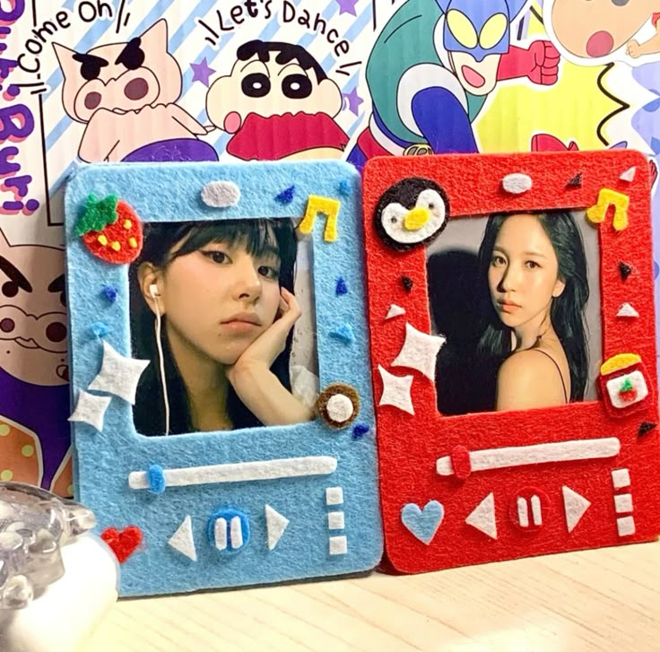
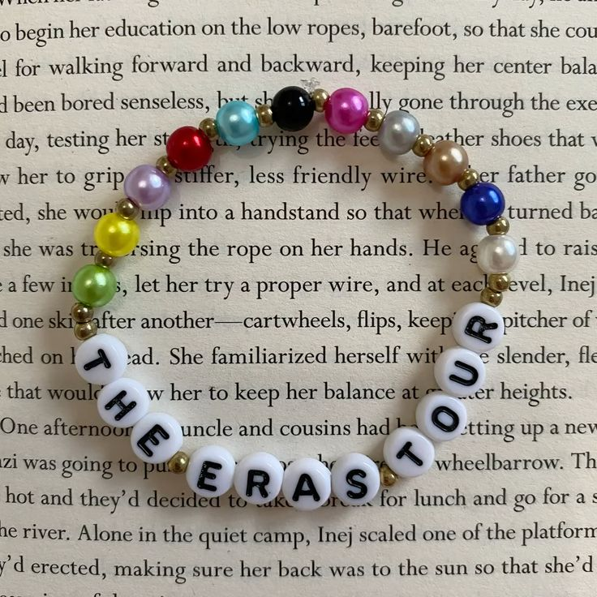
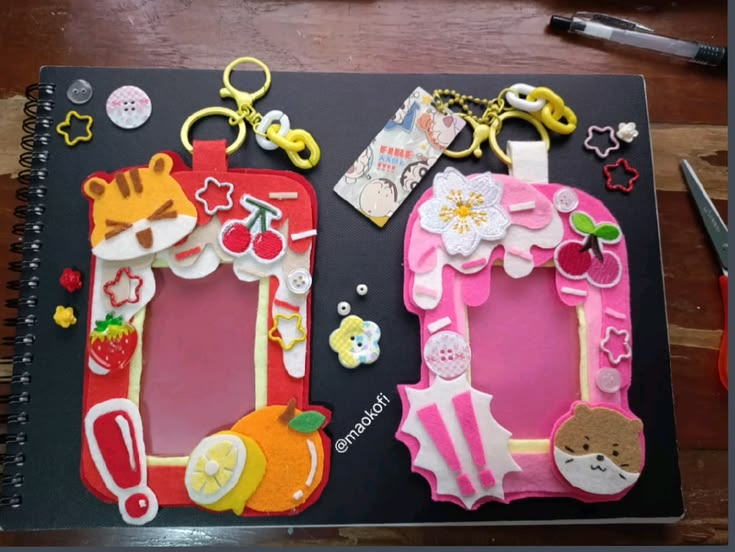

"Onde o tempo desacelera e a arte ganha vida"
Existe um valor inestimável no tempo, no cuidado e no carinho dedicados a criar algo com as próprias mãos. Na Feito à Mão, acreditamos que cada objeto carrega uma alma, uma história e uma beleza singular que nenhum processo industrial é capaz de replicar.
Nossa curadoria reúne artesãos apaixonados que transformam matérias-primas em verdadeiras obras de arte para o seu dia a dia. De cerâmicas moldadas com delicadeza a têxteis tecidos com precisão, cada peça do nosso acervo é exclusiva — feita para trazer aconchego, estilo e significado para a sua vida ou para presentear quem você ama.
Deixe-se Encantar
Aconchegue-se, reserve um momento do seu dia e percorra nossos corredores virtuais. Deixe que a textura, as cores e a autenticidade do nosso trabalho feito à mão inspirem o seu lar.
Conheça nossos Produtos e Artesãos!
produtos artesãosProdutos



Artesão:
Miguel Silva Gonçalves: Nosso artesão principal e que faz as encomendas com muito carinho. Saiba mais em seu github: Clique aqui para ir ao github
Créditos: as imagens foram retiradas do pinteest, links abaixo:
Imagem 1 Imagem 2 Imagem 3